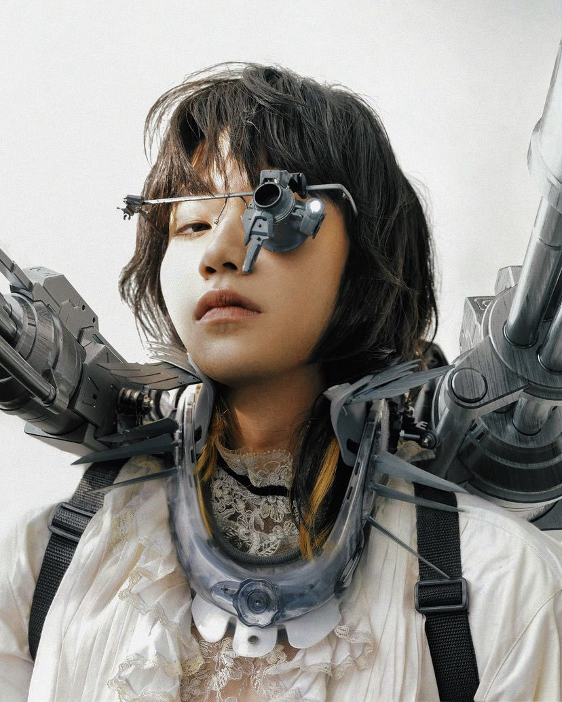
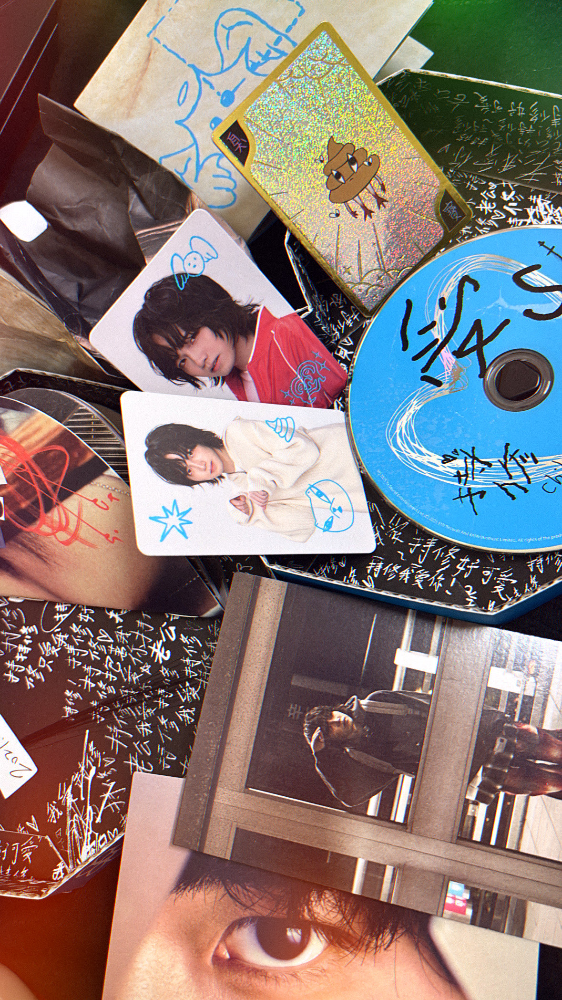
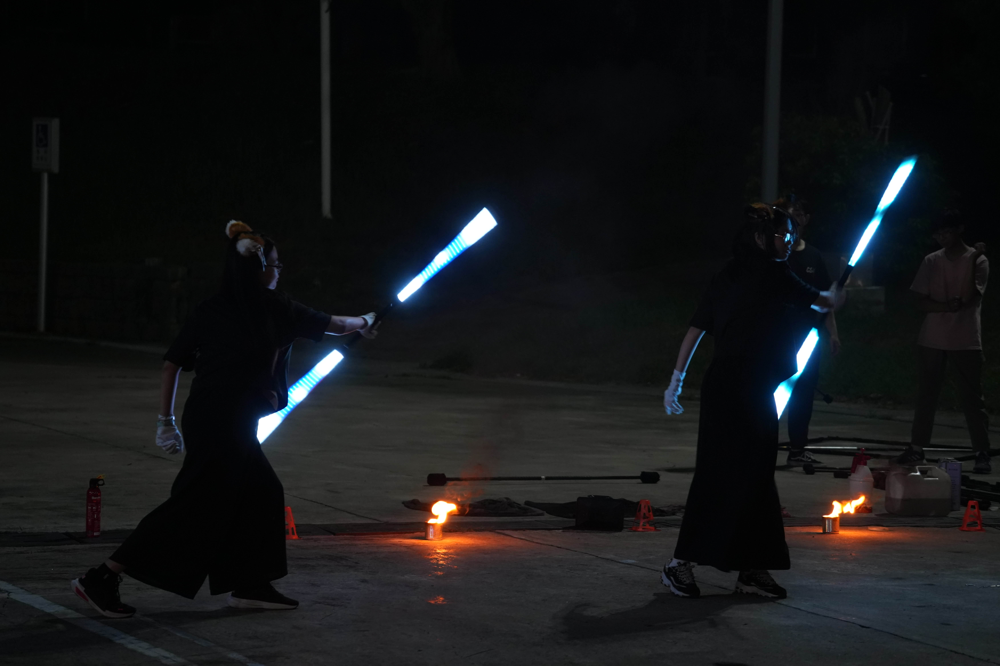
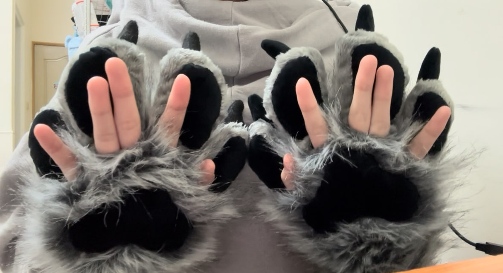
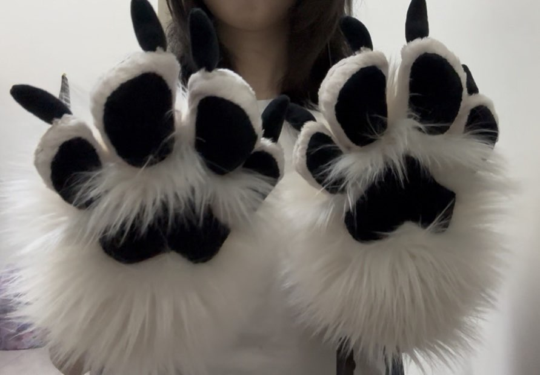
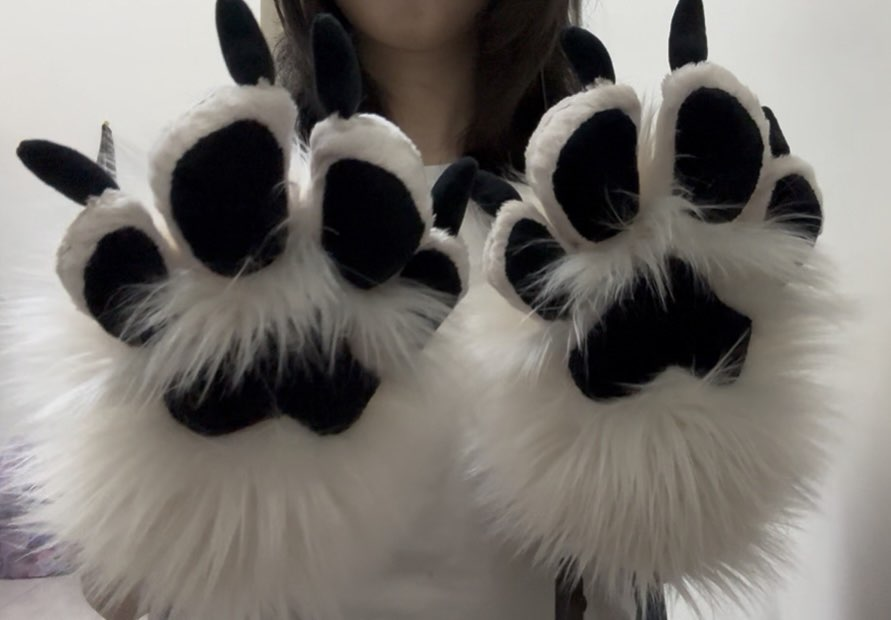
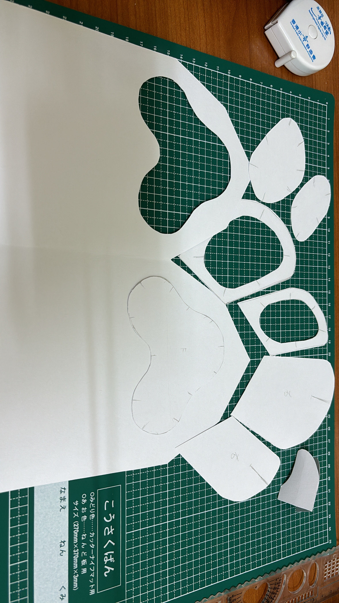
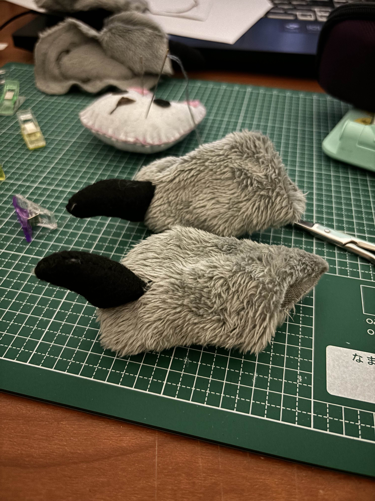

關於我
可以稱呼我為「阿露」、「鮭魚」或「三文魚」，英文可以稱呼我為 Lutis
目前是大學生，主修數位多媒體設計系
對什麼都有興趣，所以有著非常多的興趣
興趣包含：繪畫、聽歌、追星、光火舞、動畫、3D建模、音樂創作、影片剪輯、縫紉等
跳到對應位置
快速認識我 追星相關 光火舞 數位音樂創作 縫紉 動畫 3D建模 繪畫一張圖快速認識我

追星
我是一個熱愛追星的人，目前主要追的團體有：
- XG - 全員推，偏Maya和Harvey
- KATSEYE - 全員推
- XLOV - Rui🩷 & Wumuti❤️
- MEOVV - Sooin🐈⬛🩵
- YOUNG POSSE - Doeun🦒
- ALLDAY PROJECT - Bailey🐝
XG是我的本命團（最愛的團）

XG成員：Harvey、Hinata、Juria、Jurin、Chisa、Cocona、Maya
XG世巡一有參戰香港場、追加大阪場Day 1&2

香港場用了一生運氣三抽抽到Maya線下1v1
追加大阪場Day 1坐的位置離小舞台超近，然後被安可puppet show坐在面前的Maya看到了， 手上沒有任何應援牌但在狼耳頭飾的幫助下獲得了飯撒（p.s. 影片中的叫聲不是我的）
我還有追台灣歌手-持修
開專輯抽到隱藏卡片（閃卡）
 ［點我回到頂端］光火舞
大一下學期加入了正修光火舞蹈社，曾擔任副社長
以下是我表演時的照片
 [點擊了解更多]數位音樂創作
因為太忙所以只有過往2021的作品（可能有點難聽，慎重考慮後再聆聽）
Megalovania (remix by Lyn cat) 原創角色主題曲縫紉
以下是我縫紉的一些作品，目前只有純手工的作品
 

一些製作過程

